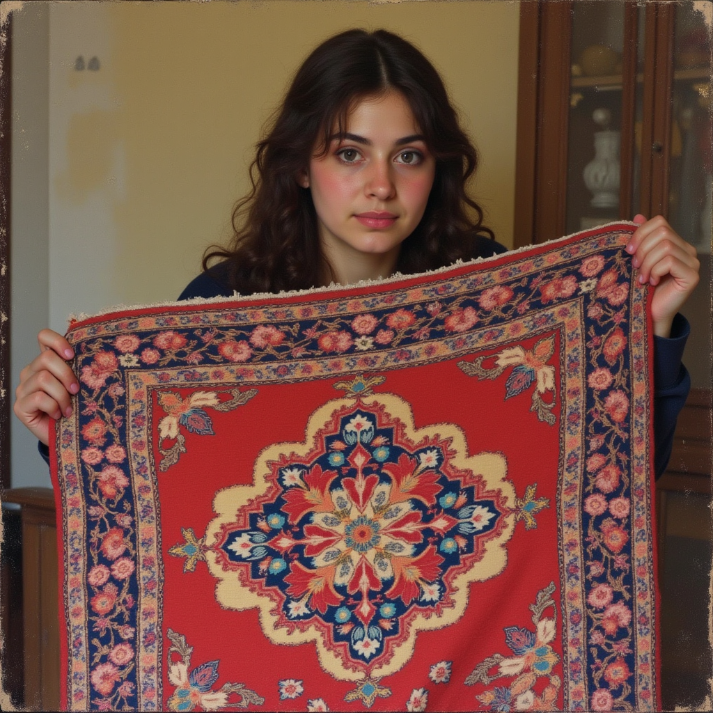
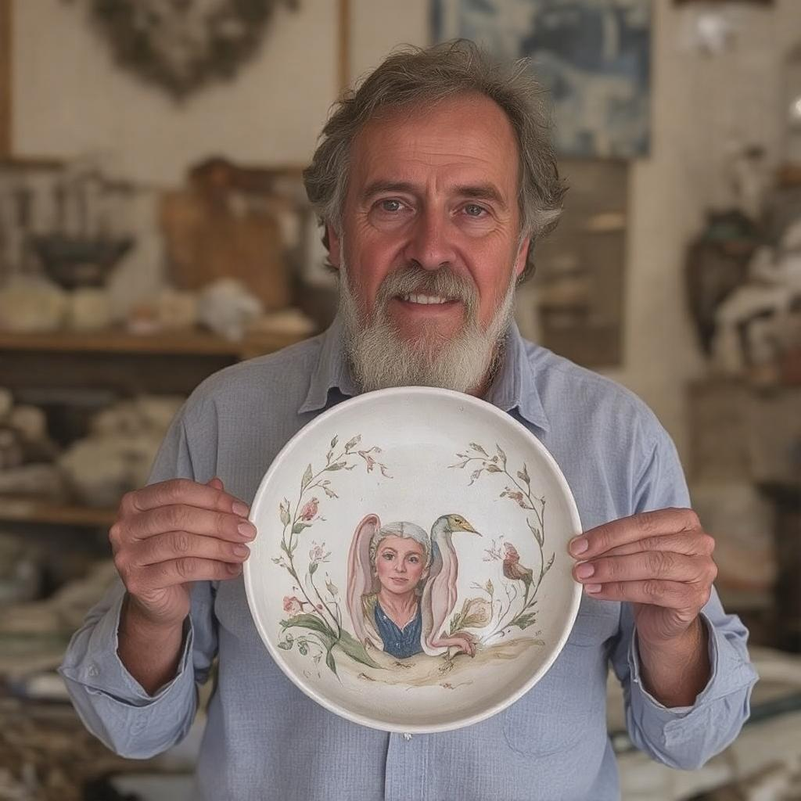
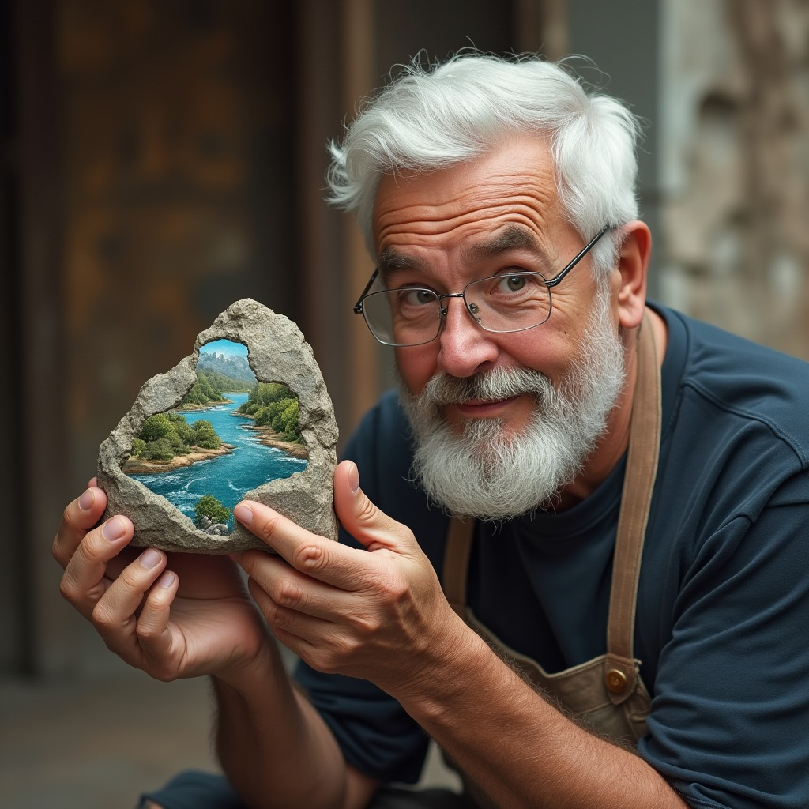
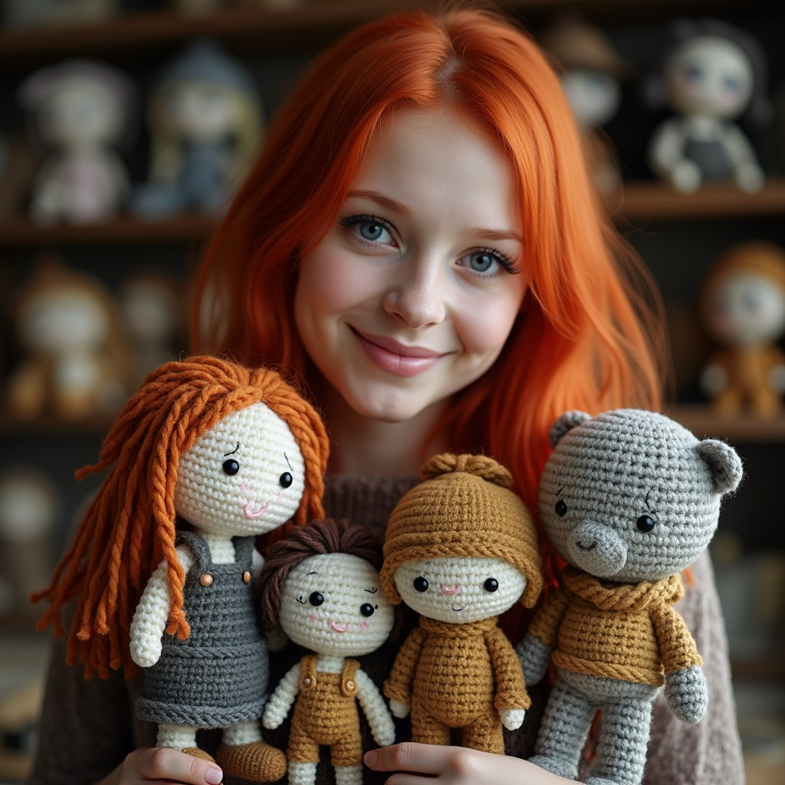

Ben LoLoKo, 3 arkadaşın bir gece Skype aramasında öylesine aklına gelen ve daha sonra "hadi yapay zekayla görselini yapalım" dedikleri o genç nineyim.😁
Bugün size evde sıkıldığınızda vakit geçirebileceğiniz, stresinizi atabileceğiniz ve hobi edinebileceğiniz etkinlik fikirleri vereceğim.

Halı Dokuma
Hem dekorasyon hem de sıcak bir zemin için evlerin vazgeçilmezi olan halı, el ile çözgüler etrafında bağlantı oluşturan ipliklerin kirkit denilen bir aletle sıkıştırılmasıyla dokunur. El ile yapılan halılar için bir tezgaha ve yün ipliklere ihtiyaç duyulur. Büyük sırıkların birbirine geçirilmesiyle oluşan bu tezgaha yukarıdan aşağıya olacak şekilde gergin yün ipler bağlanır. Çözgü adı verilen bu gergin ipler halının iskeletini oluşturur. Çözgü ipliklerinin arasına paralel gelecek şekilde varagele adı verilen değnek düğüm atma işini kolaylaştırmak için iplikler arasına boşluk bırakır. Dokuma işleminin yapıldığı çözgü ipliklerinin arasından geçirilen ipliğe ise atkı denir. Atkı ipliği geçirilip düğüm sırası tamamlandığında kirkit denilen sıkıştırma tarağı ile düğüm sırası aşağı itilerek sıkıştırılır. Bu sistem ile halı dokuma gerçekleşir.

Porselen Boyama
Porselen boyama sanatında, yüksek ısıda genleşen porselenin kalıcılığını artırarak yüzyıllarca korunmasını sağlayan özel boyalar kullanılmaktadır. Bu sanat dalında kullanılan diğer malzemeler ise medyum, selülozik tiner, çeşitli yağlar ve samur fırçalardır. Porselen boyama sanatının klasik örneklerinde daha çok çini desenleri tercih edilse de kullanılan desenler uygulandığı bölgeye göre farklılık göstermektedir. Üç bölüme ayrılan bölgeler Kütahya, İznik ve Yıldız olarak isimlendirilmektedir.

Taş Boyama
Taşı boyamak için gerekli malzemeleri edinmek gereklidir. Özellikle taşların seçimi önemlidir, tercihen düz ve mümkünse beyaz olması daha çok tercih edilmelidir. Bu taşları plajlardan da toplayabilir veya yapı marketlerde bulunan taş satış noktalarından satın alabilirsiniz. Akrilik boyalar su bazlı olduğu ve örtme özelliğine sahip olduğu için kullanışlıdır. Fırçalar en önemli malzemelerimizden biridir, taşlarımız çok büyük olmadığı için genellikle ince uçlu fırçalar kullanılmaktadır. Örneğin, 3.0, 2.0 veya 0 numaralı fırçaları seçebilirsiniz. Daha büyük fırçalarımız olabilir veya bunları son işlem bittikten sonra cilalamak için kullanacaksınız. Taşı boyamaya başlamadan önce, kalemimizi kullanabilmemiz için bir eskiz oluşturuyoruz. Ve sonra ince uçlu kalemlerimiz var, 0.8, 0.3 boyutlu kalemler kullanabiliriz. Taslaklardaki yanlış şeyleri silmek için silgide olmalıdır.

Amigurumi
Amigurumiye yeni başlamak istiyorsanız, örgü malzemeleri satan bir ipciden ucu fazla kalın olmayan 2-3 mm arası alüminyum tığlar ve buna uygun olarak ipler almalısınız. Örgü için sürekli ilmek sayacağınız için bir ilmek işaretleyicisi de almanızda fayda var. İlmek işaretleyici olark 5-10 cm uzunluğunda bir ipte kullanabilirsiniz. Yapacağınız oyuncağın şekline göre ek malzemeler (güvenli göz, eklem, düğme vb) almanız gerekmektedir. Bu tamamen yapacağınız oyuncağın şekline göre değişecektir. Ayrıca oyuncağınızın gözleri için amigurumi güvenli (kilitli) gözleri, içini doldurmak için boncuk elyaf ve detaylar için daha ince iplere ve iğnelere ihtiyacınız olacak.Temel olarak tığ ile sık iğne tekniği kullanılır. Ayrıca yapılacak oyuncağa uygun olarak gerekli yerlerde ilmek arttırıp eksilterek oyuncağı şekillendireceksiniz.
Evet yavrularım, bugün ki konumuz bu kadarrr. Başka bir konuda görüşmek üzere❤️